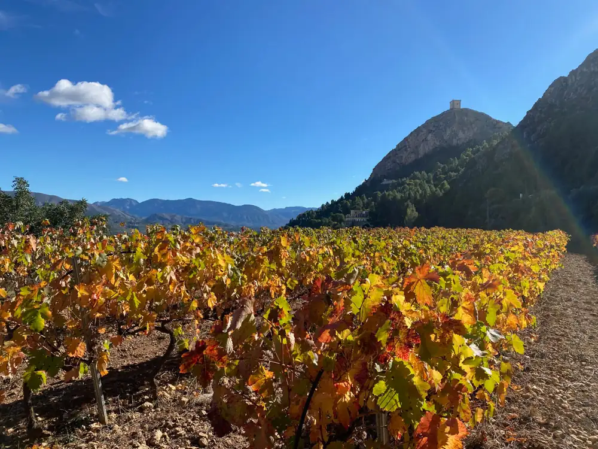
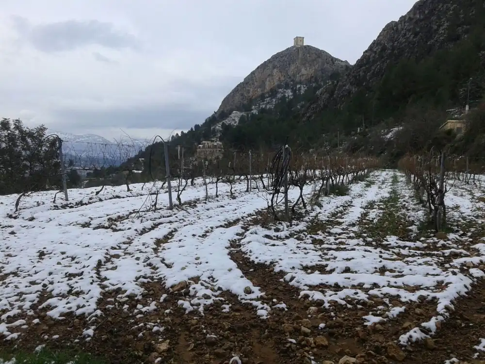
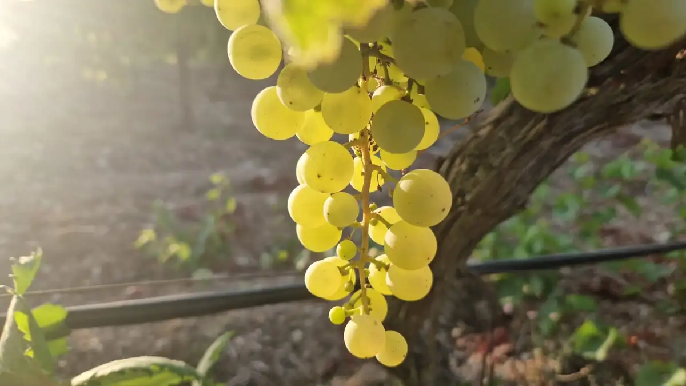

In depth
Technical sheet
For those who like to know the details: where our vines grow, the climate and soils that shape them, the varieties we grow, and how we make and age our wines.
01
Location
- Cellar
- Carrer Església 2–4, Gaianes (Alicante), in a building that has made wine and olive oil for more than two centuries
- Region
- El Comtat, the mountainous interior of the Comunitat Valenciana, Spain’s Levante
- Vineyards
- Agres, Alcosser de Planes, Beniarrés and Cocentaina
- Landscape
- Sierra de Mariola Natural Park, the Serpis river valley and the foothills of the Benicadell, with the Sierra de Aitana, the Serrella and the Font Roja Natural Park on the horizon
- Altitude
- Around 550 m at Sant Cristòfol (Cocentaina), beneath Pic Negre (~1,000 m) and Montcabrer (1,390 m)


02
Climate
Mediterranean, tempered by altitude and the surrounding mountains.
- Harvest
- Days of 24–29 °C, nights in Agres of 9–12 °C; the cool nights let the vines rest and keep the fruit fresh and aromatic
- Daily range
- At Sant Cristòfol, 5–10 °C in winter, spring and autumn (below 5 °C in January); 15–20 °C in summer
- Frost
- East-facing slopes catch the early sun and are shaded by Pic Negre in the afternoon, making them less prone to frost than the nearby Plana de Muro
- Rain
- Irregular, at times heavy in scattered summer thunderstorms
03
Terroir
- Soils
- Limestone and stony
- Terrain
- Narrow, long terraces on steep mountain slopes; at Sant Cristòfol only 0.8 of 1 hectare can be cultivated because of the topography
- Recovery
- Several plots are terraces abandoned for decades and brought back into cultivation; our largest vineyard, five to six hectares near Agres, has been under recovery since 2025
- Micro‑vineyards
- Small family plots, ours or leased, planted over generations with a little Garnacha, Monastrell or Cabernet
- Landscape
- Cultivated vineyards below Montcabrer also act as a firebreak in a heavily wooded area
04
A little history
Vines have been grown in the lands of Alicante since antiquity, and for centuries Vino de Alicante — the sweet, long‑aged Monastrell known today as Fondillón — was famous across Europe, mentioned by writers from Shakespeare to Dumas.
The 19th century was a golden age. When oidium and then phylloxera devastated French vineyards, wine from Alicante was exported to France in huge quantities, until the trade agreement with France ended in 1892. Phylloxera itself reached Alicante at the beginning of the 20th century, and vineyards were replanted on American rootstocks.
In the mountains of El Comtat, many small terraced vineyards were later abandoned as people moved to the textile towns of Alcoi and Cocentaina. Bringing some of them back to life is part of what Celler Quàntic is about.
05
Our vineyards
About ten hectares in all, in plots of very different sizes.
| Vineyard | Varieties |
|---|---|
| Cocentaina · Sant Cristòfol | Tempranillo, Monastrell, Garnacha Blanca |
| Cocentaina · Riu Serpis | Syrah, Garnacha, Monastrell |
| Alcosser de Planes | Syrah |
| Alcosser de Planes · Riu Serpis | Malvasía, Tintorera |
| Beniarrés | Malvasía |
| Agres · Mas de Batlle | Garnacha, Garnacha Blanca |
In focus: Sant Cristòfol, Cocentaina
- Setting
- East‑facing, below Pic Negre, within the Sierra de Mariola Natural Park
- Altitude
- ~550 m
- Area
- 1 ha, of which 0.8 ha cultivated
- Soil
- Limestone, rocky, on narrow terraces
- Yield
- 1,500–2,000 kg a year of Tempranillo and Monastrell; 600–800 kg of Garnacha Blanca

06
Grape varieties
- Red
- Tempranillo · Syrah · Garnacha · Garnacha Tintorera · Monastrell · Cabernet Franc · Cabernet Sauvignon
- White
- Garnacha Blanca · Malvasía · Macabeo · Xarel·lo · Chardonnay
- Our focus
- For reds, a structured, age‑worthy line built on Syrah with Tintorera, and a lighter, approachable line from the micro‑vineyards. For whites, Garnacha Blanca — unusual in our area, but here it gains a character of its own
07
Winemaking
- Harvest
- By hand, from our own and leased vineyards
- Fermentation
- Reds in the original concrete tanks, more than a century old; full temperature control at every stage — reception of the grapes, fermentation and storage
- Ageing
- Stainless steel and French oak barrels only
- Oenologist
- Oscar Priego
- Production
- About 12,000 litres in 2025 (6,000–7,000 red, 5,000–6,000 white); capacity of 20,000 bottles a year
08
The wines
| Lise Meitner | Max Born | El·lipse | |
|---|---|---|---|
| Type | White | Red | Red |
| Vintage | 2025 | 2022–2023 blend | 2024–2025 blend |
| Varieties | Garnacha Blanca 100% | Syrah 50%, Tempranillo 38%, Tintorera 12% | Syrah, Tempranillo, Monastrell, Tintorera |
| Ageing | Partly, 4 months in French oak | 11 months in French oak | 6 months in barrel |
| Alcohol | 12.5% | 14% | 14% |
| Verema | 95 / 100 | 94 / 100 | 93 / 100 |
Vintage, ageing and alcohol as listed for the rated wines; details can vary from one release to the next.